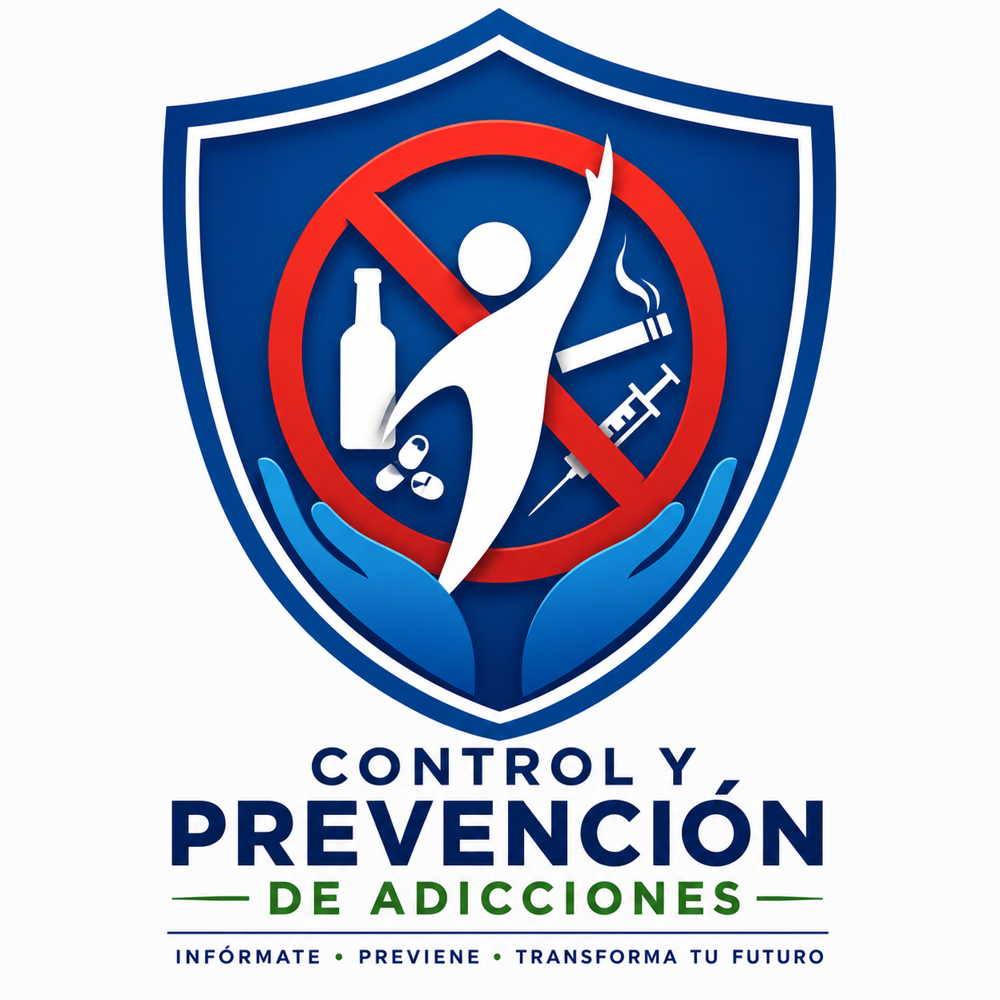

Infórmate, previene y transforma tu futuro
El alcoholismo es una enfermedad crónica caracterizada por la dependencia al alcohol. Su consumo excesivo puede afectar la salud física y mental, ocasionar problemas familiares, laborales y sociales. En México representa uno de los principales problemas de salud pública, siendo una de las principales causas de accidentes y enfermedades hepáticas.
El tabaquismo consiste en la dependencia a la nicotina presente en los productos derivados del tabaco. Es una de las principales causas de cáncer, enfermedades cardiovasculares y respiratorias. La exposición al humo también afecta a las personas que conviven con los fumadores.
La drogadicción es una enfermedad que genera dependencia física y psicológica hacia sustancias psicoactivas. Su consumo puede provocar daños severos al sistema nervioso, alteraciones emocionales y problemas sociales. La prevención y la detección temprana son fundamentales para evitar consecuencias graves.
La ludopatía es una adicción relacionada con los juegos de azar y las apuestas. Quienes la padecen presentan una necesidad compulsiva de jugar, lo que puede ocasionar problemas económicos, conflictos familiares y afectaciones emocionales.
El uso excesivo de videojuegos puede generar aislamiento social, alteraciones del sueño y disminución del rendimiento académico o laboral. El equilibrio entre el entretenimiento y las actividades diarias es fundamental para prevenir esta conducta.
La dependencia a las redes sociales puede generar ansiedad, estrés y afectar las relaciones personales. El uso excesivo de dispositivos electrónicos puede alterar hábitos saludables y disminuir la productividad en las actividades cotidianas.
El consumo inadecuado de medicamentos sin supervisión médica puede generar dependencia y poner en riesgo la salud. Algunos analgésicos, sedantes y estimulantes tienen un alto potencial de abuso y deben ser utilizados únicamente bajo prescripción médica.
Las compras compulsivas representan una adicción conductual que se caracteriza por la necesidad incontrolable de adquirir productos o servicios. Esta conducta puede ocasionar problemas financieros y emocionales, afectando la calidad de vida de las personas.